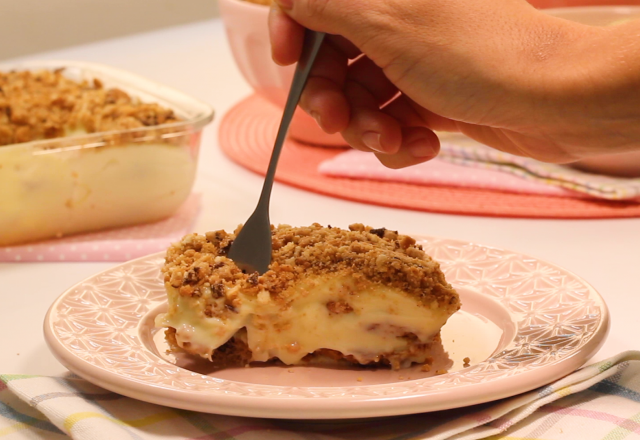

RECEITA - SOBREMESA DE 3 INGREDIENTES
INGREDIENTES
- 2 caixas de leite condensado
- 3 pacotes de biscoito cookie
- 100 ml de suco de limão
MODO DE PREPARO
- 1. Junte o leite condensado com o suco de limão.
- 2. Misture bem e reserve.
- 3. Triture 1 pacote de biscoito tipo cookie e reserve.
- 4. Em uma forma, coloque o fundo com a misture de leite condensado e logo após uma camada de biscoito cookie.
- 5. Faça camadas alternadas até terminar com uma de massa doce.
- 6. Finalize com o biscoito triturado e leve à geladeira até gelar.